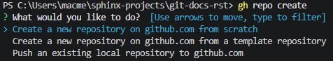
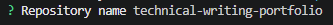
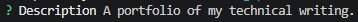
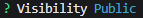
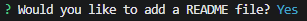
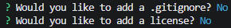
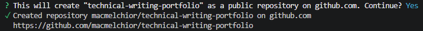
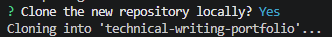
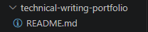

Getting started¶
Follow this tutorial to learn basic Git workflow.
Introduction¶
In this tutorial, you will learn:
How to create a repository.
How to create a new branch.
How to publish edited file to GitHub.
Open a pull request.
Merge a pull request.
What you will need:
Git versioning system.
A GitHub account.
Any editor that lets you edit text files. An IDE such as Visual Studio Code is recommended.
Create a repository¶
First, you need to create a repository.
Create a new project in Visual Studio Code.
Press Ctrl+`. This will open the terminal at the bottom.
In the terminal, enter
gh repo create.Select Create a new repository on github.com from scratch.

Enter repository name.

Add a description.

Choose
Publicvisibility. This will make the repository visible to others.
Enter
Yto add a README.md file.
On next two steps, simply press Enter to apply default settings.

Enter
Yto confirm creating the repository. You will see a confirmation message.
Enter
Yto clone the new repository. This will create a copy of the repository on your computer.
After perfoming the steps, you should see the following file structure:
